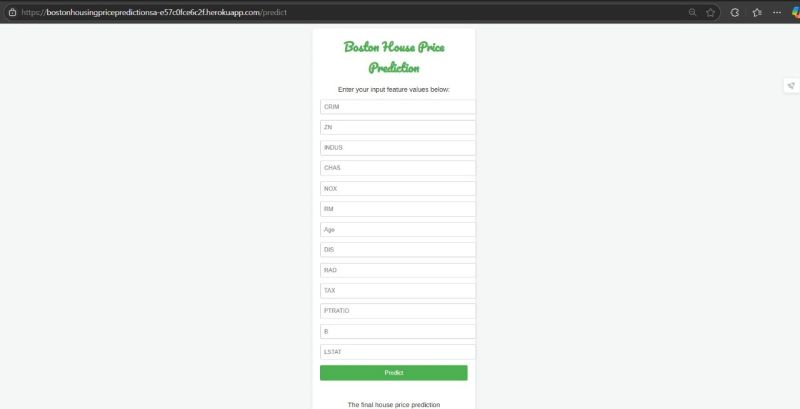

Hello! I'm Sai Srinivasa Rao Allada, an aspiring data analytics professional and B.Tech candidate in
Computer Science at Mahindra University (Class of 2025). I excel at converting raw data into
actionable insights using machine learning, predictive modeling, and advanced visualization
techniques. My diverse academic projects and internships at Vasstr and MedTourEasy have sharpened my
technical skills in Python, SQL, MATLAB, and modern analytics tools, all while building a strong
business-focused mindset.
Currently, as a part-time intern at Ecode Networks, I'm enhancing our AI-driven firewall management
solutions by developing real-time dashboards, refining PoC feedback systems, and creating engaging
technical content. I aim to join innovative teams where I can unlock the transformative power of data
to drive strategic decision-making and business growth.
Explore my portfolio to see how I push the boundaries of data science and business intelligence. I
look forward to connecting and collaborating on exciting opportunities.
Skills
Programming and Query Languages
Data Analysis and Visualization
- EDA
- Power BI
- Matplotlib
- Seaborn
Version Control and Collaboration
Soft Skills
- Communication
- Empathy
- Decision Making
- Active Listening
Conducted a real-world sales analysis case study on a Walmart dataset to derive actionable
business
insights and
recommendations.
Cleaned and transformed retail data using Python, created custom metrics, and imported the
dataset into MySQL using PyMySQL and SQLAlchemy for efficient querying.
Performed in-depth analysis to identify key trends and solve business problems related to payment
patterns,
sales fluctuations, branch performance, and category profitability.
Derived insights on busiest transaction days,
preferred payment methods, city-category rating trends, and branches with significant
year-over-year
revenue
declines.

Built and deployed a complete machine learning solution for predicting Boston house prices,
demonstrating
end-to-end ML development skills.
Performed comprehensive data cleaning and exploratory data analysis (EDA) to prepare the Boston
Housing
dataset for modeling.
Developed and deployed a Linear Regression model using Flask on Heroku, enabling
real-time price predictions through a web application.
Tools: Python, Pandas, NumPy, Scikit-learn, Flask, Heroku.
.png)
Designed and developed an interactive dashboard using Power BI to analyze Zomato restaurant data.
Visualized key metrics such as order frequency, top restaurants, popular cuisines, and geographical
distribution of orders to provide insights into customer behavior and market trends.
Utilized data cleaning and transformation techniques in Power BI to prepare the data for analysis
and create meaningful visualizations.
August 2024 - December 2024
Designed an Al-guided risk assessment framework to enhance decision-making in the real estate
sector
by pre-
dicting and evaluating project risks.
Developed a framework incorporating machine learning models (Decision
Tree regression), Analytical Hierarchy Process (AHP), and Monte Carlo Simulation to provide
comprehensive
risk assessments.

Developed a system to analyze EEG signals and classify driver vigilance levels, aiming to improve
road
safety by predicting driver drowsiness.
Implemented a multi-head attention-based transformer model to
effectively analyze EEG signals and classify response times into distinct vigilance levels.
Used Python and MATLAB for signal processing, model development,
and analysis.

Investigated the influence of demographic factors on customer spending behavior through detailed
transaction
data analysis.
Explored and visualized customer transaction data using Python, Pandas,
and
various visualization libraries to identify key spending patterns and trends.
Tools: Python, Pandas, Visualization Libraries.